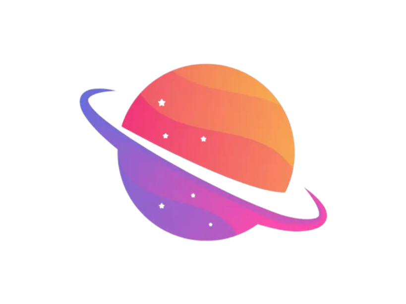
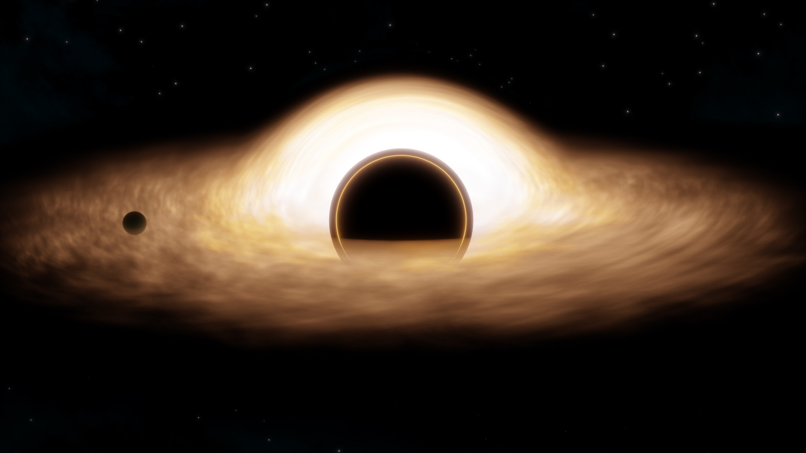
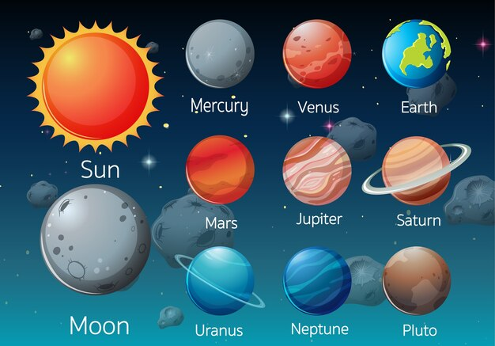
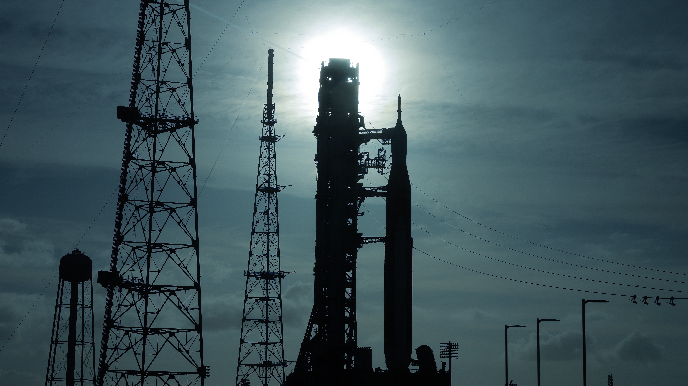

Merülj el a világegyetem legrejtélyesebb jelenségeinek világában és tudj meg mindent a fekete lyukakról modern animációk segítségével.

Fedezd fel a Naprendszer bolygóit egy lenyűgöző 360 fokos vetítésen, ahol úgy érezheted mintha valóban az űrben utaznál.

Kövesd élőben az emberiség történelmének egyik legizgalmasabb űrmissziójat! Az Artemis II küldetés az első lépés a Holdra való visszatéréshez. Valódi NASA felvételek és szakértői kommentár segítségével közelebb kerülhetsz az űrkutatás jövőjéhez mint valaha.